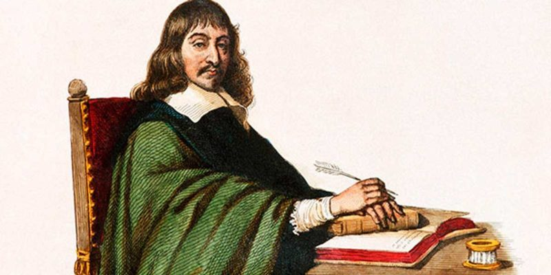
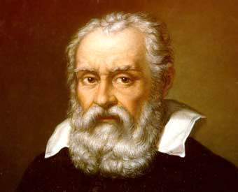
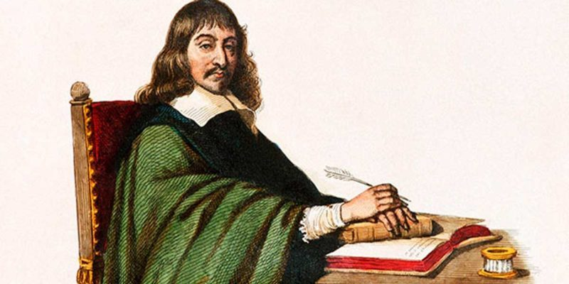
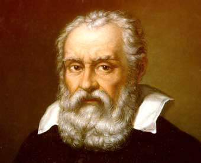

Filósofos de la Edad Media (250 – 1500)
San Agustín (354-430)
El primer gran filósofo cristiano es San Agustín, aunque durante su vida el Imperio Romano de Occidente siguió existiendo (a duras penas: caería en el año 476). En su filosofía San Agustín nunca puso en cuestionamiento la existencia de Dios, pero sí reflexionó sobre cómo era posible que, siendo Dios un ser bueno y todopoderoso, hubiera podido crear un mundo en el que estuviera presente el mal. El mal fue el tema sobre el que filosofó San Agustín, y lo hizo siguiendo el pensamiento de Platón (el neoplatonismo era la única corriente filosófica vigente en esa época). La clave de la existencia del mal en un mundo creado por un Ser bueno era el libre albedrío de las personas. Dios había creado seres humanos racionales, con capacidad para decidir su propia conducta. Era por ello que algunos individuos actuaban con maldad. No por culpa de Dios, sino por voluntad propia. Es interesante la reflexión que hace San Agustín de que, en un mundo sin mal, los seres racionales no seríamos libres de decidir nuestras conductas. Mientras los no creyentes pueden encontrar en el mal una prueba de la inexistencia de Dios, San Agustín lo utiliza como una explicación para demostrar justamente lo contrario.
Anselmo de Canterbury (1033-1109)
Tuvieron que pasar nada más y nada menos que seiscientos años para que el cristianismo diera otro gran filósofo. Anselmo de Canterbury (canonizado como San Anselmo en el año 1494) se empeñó en demostrar la existencia de Dios de manera argumentada. Planteó una ingeniosa manera de conseguirlo. Sólo hace falta aceptar dos premisas (fácilmente aceptables): que Dios, de existir, es un ser superior a todos los demás, que no hay nada más grande; la otra premisa es que la existencia es superior a la no existencia, es decir, aquello que existe es más importante que lo que no existe. Con estas dos ideas se plantea el argumento ontológico de San Anselmo, que se puede representar de la siguiente manera:
El argumento fue aceptado por destacados filósofos como Descartes o Spinoza, pero también hubo quienes lo encontraron absurdo, como Santo Tomás de Aquino o Immanuel Kant. Fue de hecho Kant quien, en 1781, bautizó este planteamiento de San Anselmo como «Argumento ontológico». Además, Anselmo de Canterbury es considerado el padre de la escolástica.
Averroes (1126-1198)
Mientras los monjes cristianos seguían la obra de Platón, el juez musulmán Averroes se interesó por Aristóteles. Averroes es la latinización del nombre árabe de este hombre nacido en Córdoba en el año 1126. En realidad su nombre era Abū l-WalīdʾAḥmad ibn Muḥammad ibn Rušd, pero es mucho más sencillo para nosotros llamarlo Averroes. Fue importante en el contexto del mundo musulmán, porque trató con empeño de hacer compatibles las enseñanzas del Corán con la reflexión filosófica. Planteó que el alma estaba dividida en dos partes, una perecedera y otra eterna, y además coincidió con Aristóteles en que el Universo había existido siempre.
Santo Tomás de Aquino (1224-1274)
El filósofo medieval más importante es Santo Tomás de Aquino. No siguió presupuesto neoplatónicos como San Agustín o San Anselmo, sino que se dejó influir por el pensamiento de Aristóteles. Un primer punto interesante en la filosofía de Santo Tomás es la casación entre dos planteamientos aparentemente irreconciliables: Aristóteles decía que el Universo ha existido siempre y la Biblia dice que el Universo no ha existido siempre, sino que fue creado por Dios en un momento preciso. Ante este dilema, Santo Tomás propone que el Universo fue creado por Dios, pero que éste lo creó eterno. Durante toda su obra, Santo Tomás de Aquino defiende que la razón humana y la doctrina cristiana no entran nunca en conflicto porque no pueden entrar en conflicto, no se contradicen porque ambas han sido creadas por un mismo Creador. Además, defendió que el ser humano adquiere el conocimiento a través de los sentidos. Santo Tomás fue un gran ejemplo de perseverancia en la búsqueda de la tolerancia entre religión y filosofía, planteando siempre la posibilidad de que ambas disciplinas no se contradijeran.
Maestro Eckhart (1260-1328)
Seguidor del pensamiento de Santo Tomás, el Maestro Eckhart fue un teólogo alemán muy controvertido en su época. En sus famosos sermones planteaba que el mundo era eterno o que no era necesario pedir cosas a Dios. Su estilo místico solo le causó problemas: la implacable Inquisición lo procesó por herejía. El mismo año de su muerte, en 1328, la Iglesia decretó que la obra de Eckhart fuera leída en los ambientes universitarios. En 1886 los filósofos alemanes redescubrieron su pensamiento y en 1992 fue rehabilitado por el Vaticano.
Guillermo de Ockham (1288-1349)
Como su predecesor el Maestro Eckhart, el teólogo inglés Guillermo de Ockham tuvo sus problemas con la Iglesia. Fue excomulgado por sostener que el papa no tenía autoridad. Mantenía que los preceptos universales eran abstracciones derivadas de los individuos particulares, y por ello se le considera precursor del empirismo británico que inició John Locke trescientos años después. Es famoso por el principio de la Navaja de Ockham, que sostiene que la mejor explicación posible es siempre la más sencilla.
Nicolás Maquiavelo (1469-1527)
No podía ser de otra manera: el primer gran filósofo de la Era de la Razón fue un vecino de Florencia, la capital del conocimiento y la cultura. Nicolás Maquiavelo se aleja de la moralidad cristiana en su célebre El Príncipe, un libro con el que propone un manual para guiar al gobernante perfecto. Según Maquiavelo el gobernante debe ser feroz como un león y astuto como un zorro. La clave del pensamiento de este hábil consejero es que un gobernante no puede verse limitado por la moralidad, sino que debe hacer todo lo necesario para garantizar su propia gloria y el éxito del Estado que gobierna. Aun así, nunca debe caer en el error de propiciar que el pueblo le odie. El príncipe (con esta palabra llama a cualquier gobernante, líder, rey, papa… etc.) debe ser antes temido que amado, pero nunca odiado. Maquiavelo cree que el fin justifica los medios sólo en el caso del príncipe. La conducta adecuada para los ciudadanos no es la misma que la que se le debe exigir al príncipe. Este pensamiento tan desgarradamente frío e insensible ha tenido muchísima influencia en los líderes del mundo, que han abordado las enseñanzas de Maquiavelo desde el pragmatismo y el realismo.
Erasmo de Rotterdam (1466-1536)
El pensamiento de Erasmo de Rotterdam refleja las ideas humanistas que empezaban a afianzarse en Europa durante los primeros años del Renacimiento. Criticó mordazmente la corrupción y las discusiones doctrinales en el seno de la Iglesia, y defendió que la ignorancia era consustancial al ser humano. De hecho, sostenía que la ignorancia era fuente de felicidad. El conocimiento podía ser irónicamente una carga que complicara la vida del hombre. Erasmo llegó a decir que la propia religión era una forma de ignorancia, ya que se basaba en la fe y no en la razón. Lo que él proponía era un regreso a las creencias sencillas y sinceras, estableciendo personalmente e individualmente un vínculo con Dios. Estaba en contra de seguir las creencias establecidas por la Iglesia. No es difícil entender por qué fue un pensador muy importante para la inminente Reforma que cambió la historia del cristianismo.
Martín Lutero (1483-1546)
En el año 1517 Martín Lutero se acercó a la puerta de la iglesia de Wittenberg, en el corazón de Alemania, y clavó un papel. En ese momento cambió la historia de Occidente. En ese papel había noventa y cinco tesis que pretendían iniciar un debate en el seno de la Iglesia. Fue un hecho histórico e importantísimo, que partió a la cristiandad en dos mitades: el catolicismo y el protestantismo. Martín Lutero estaba harto de la corrupción y del funcionamiento de la Iglesia como institución, y demandó regresar a las enseñanzas originales de la Biblia. Encontró muchos seguidores. Su filosofía se basaba en ideas revolucionarias que rompían con 1400 años de tradición cristiana, como por ejemplo que la salvación era un regalo otorgado por la gracia de Dios (la doctrina del cristianismo oficial defendía que todos los hombres serían salvados), o que la figura del papa no tenía ningún tipo de relación con Dios. Tampoco creía en el libre albedrío de los individuos. Su obra fue examinada 400 años después por Max Weber, que relacionó el pensamiento del protestantismo con el desarrollo del capitalismo.
Francisco de Vitoria (1486-1546)
Considerado como el padre del derecho internacional, el fraile Francisco de Vitoria fue seguidor de las ideas de Santo Tomás y Aristóteles. Hizo aportaciones en el campo de la economía (creía que el orden natural permitía la circulación de personas y bienes), en el derecho (rechazó la jerarquía medieval, creyó en los derechos de los indígenas recién «descubiertos» por los europeos en América) y en el ámbito de las relaciones internacionales (tratando de convencer de que dichas relaciones no debían regirse por la fuerza). Fundó la corriente de pensamiento de la Escuela de Salamanca, muy importante dentro de la escolástica.
Juan Calvino (1509-1564)
Influenciado por las ideas de Erasmo y Lutero, Calvino fue radical a la hora de asegurar que algunas personas estaban predestinadas a la salvación, y otras predestinadas a la condenación. Desde su punto de vista, el individuo podía tratar de demostrar que era un elegido de Dios con los éxitos que alcanzara en vida. Las ideas de Calvino fomentaban el espíritu de empresa burgués. No fue especialmente tolerante, como muestra la implacable condena al científico Miguel Servet, a quien Calvino acusó de herejía. Servet fue quemado vivo junto a sus obras. Calvino es el padre del calvinismo, una corriente dentro del protestantismo.
Bartolomé de las Casas (1484-1566)
Un ejemplo de que los tiempos estaban cambiando con respecto a la oscura Edad Media es la figura de Bartolomé de las Casas. Este fraile español se preocupó por la dignidad y derechos de los indígenas, que sufrían el racismo y la violencia de los colonizadores en la recién descubierta América. Su defensa fue tal que se ganó el apodo de Apóstol de los Indios. Se le considera, junto a Francisco de Vitoria, fundador del derecho internacional moderno, y también precursor de los derechos humanos.
Francis Bacon (1561-1626)
Francis Bacon es el iniciador del empirismo británico, una corriente que se basa en la idea de que todo conocimiento ha de proceder de la experiencia y los sentidos. A esta postura se sumarán célebres filósofos después de Bacon como Hobbes, Locke o Hume, en contraposición al racionalismo que defenderán Descartes, Spinoza o Leibniz. Es una lucha filosófica muy importante, y que tiene su base más profunda en el debate sobre si el ser humano posee o no ideas innatas. Bacon, Hobbes, Locke y Hume creen que no hay nada en la mente que no haya estado antes en los sentidos («Nihil est in intellectu quod non prius fuerit in sensu»), y que la experimentación práctica es la única manera de llegar a conocer la verdad del mundo. Así promovieron la búsqueda de leyes naturales, la formulación de teorías, el planteamiento de hipótesis… y bajo esa filosofía hicieron sus progresos Copérnico (astronomía), Vesalio (anatomía), Pascal (matemáticas) o Newton (física).
Gaileo Galilei (1564-1642)
La Iglesia seguía resistiéndose a esa Era de la Razón, y encarceló a Galileo cuando éste se atrevió a decir públicamente que la Tierra se movía alrededor del Sol. Galileo fue uno de los mayores defensores de las tesis de Copérnico, que había planteado la teoría heliocéntrica. Hizo importantes avances en relación a la mecánica, a la relatividad -como explicamos en este artículo– y a la astronomía. Creía que la materia era eterna y el Universo infinito. El funcionamiento del mismo se debía a la causalidad de los átomos, bajo las leyes de la mecánica. Creía que el conocimiento de la naturaleza debía aproximarse a través de la observación y el experimento.
René Descartes (1596-1650)
A René Descartes le debemos una de las frases más famosas de la historia: «Pienso, luego existo». Esta sencilla premisa esconde en realidad una profunda carga filosófica, fruto de un trabajo reflexivo que tuvo ocupado a Descartes toda su vida: su objetivo fue detectar y comprender la verdadera realidad del mundo. Desconfiaba de los sentidos, ya que en su opinión engañaban y distorsionaban la realidad. Aquello que vemos, que tocamos, que sentimos, no tiene porqué ser necesariamente la realidad. Descartes fue el precursor de la corriente del racionalismo, opuesta al empirismo de Francis Bacon y basada en que el conocimiento sólo podía adquirirse mediante la razón, el razonamiento, la reflexión. La metodología que usa Descartes es la duda, y parte de una única certeza: se puede dudar de todo, de absolutamente todo, pero no de que se está dudando. La certeza cartesiana es que «soy», «existo». No se puede dudar de nuestra propia existencia, que se demuestra por el simple hecho de que estamos pensando. No se puede pensar si no se existe, por lo tanto: «Pienso, luego existo». Partiendo de que existimos, Descartes plantea que entonces sí que se puede dudar de todo lo demás. No hay certeza en la realidad que nos rodea, y sólo se puede tratar de entenderla mediante la razón. Además, Descartes defendió la idea de que la mente y el cuerpo son dos sustancias distintas. Se le considera el padre de la filosofía moderna, y su obra es tan influyente que los principales filósofos que le siguieron tras su muerte partieron del pensamiento de Descartes para, o bien seguir por la línea del racionalismo, o bien para refutar sus premisas.
Baruch Spinoza (1632-1677)
Uno de los grandes filósofos que vinieron después de Descartes fue Spinoza, que se posicionó a favor del pensamiento cartesiano y realizó profundas reflexiones sobre el concepto de sustancia. Siguiendo las enseñanzas de Aristóteles, Spinoza otorgó a todos los objetos del mundo dos cualidades: un cuerpo y una mente, tanto a los hombres, como a los árboles, los pájaros o las rocas. En el pensamiento de Spinoza, Dios o la Naturaleza son las únicas sustancias que se definen a sí mismas, y todas las demás están definidas por éstas dos.
Thomas Hobbes (1588-1679)
Influenciado por Francis Bacon y su nuevo método de práctica científica, Thomas Hobbes abrazó el empirismo y planteó un fisicalismo que defendía que todas las cosas que componían el Universo eran corpóreas, físicas, tenían un cuerpo. Todas las cosas tienen longitud, anchura y profundidad, y aquello que no tiene cuerpo no forma parte del Universo. Fue muy duro con el pensamiento planteado por Descartes y realizó importantes aportaciones a la política con obras como el famoso Leviatán (1651), donde propone de manera teórica el contrato social entre el Estado y el pueblo. Se le conoce popularmente por haber recuperado la famosa frase de Plauto: «El hombre es un lobo para el hombre». Hobbes desconfiaba de nuestra especie y creía en el egoísmo intrínseco en el comportamiento humano.
John Locke (1632-1704)
Como buen inglés, Locke fue un defensor del empirismo. Siguió la doctrina de antecesores como Francis Bacon o Thomas Hobbes y fue un paso más allá, asegurando que la mente nace como una hoja de papel en blanco, que sólo va llenándose de conocimiento a través del aprendizaje y la propia experiencia. Según él, los bebés recién nacidos no poseen ningún conocimiento innato, como defendían los racionalistas. Locke sí admite la capacidad humana de aplicar la razón a la información que tenemos, pero recordaba que dicha información la obtenemos únicamente a través de los sentidos. Es por eso que Locke era un gran defensor de la educación como motor de cambio en las personas. Locke también admitía la posibilidad de que existieran capacidades innatas, como la percepción o el razonamiento. En su obra encontramos una continua preocupación por comprender la fuente del conocimiento, como en Ensayo sobre el entendimiento humano (1690).
Gottfried Leibniz (1646-1716)
La batalla del empirismo vs. racionalismo siguió con Leibniz, que atacó duramente a John Locke por haber dudado de la existencia de las ideas innatas en el ser humano. Contestando directamente a Locke, Leibniz publicó Nuevos ensayos sobre el entendimiento humano (1704), donde refutaba capítulo por capítulo el Ensayo sobre el entendimiento humano de Locke. Leibniz introdujo algo interesante para el debate empirismo vs. racionalismo, ya que si bien defendía que la razón permitía acceder a todo el conocimiento, añadió un importante «en principio». Este añadido deja la afirmación en un: «En principio, la razón permite acceder a todo el conocimiento». Leibniz creía que las facultades racionales del hombre eran limitadas, por eso no todo el conocimiento podía abarcarse mediante la razón. Leibniz es considerado inventor del cálculo infinitesimal, si bien durante su vida tuvo que defenderse de las acusaciones de plagio que relacionaban su obra matemática con la de su contemporáneo Isaac Newton.
Isaac Newton (1642-1727)
Más allá de sus importantísimos descubrimientos en los campos de la física y la matemática, Newton dedicó gran parte de su tiempo a la reflexión sobre asuntos teológicos y filosóficos. De hecho publicó más páginas de estos temas que sobre ciencia. La influencia de Newton sobre la filosofía, particularmente sobre las concepciones del materialismo francés del siglo XVIII, fue enorme. Newton creía en que Dios había dado un primer impulso al movimiento del Universo, pero rechazaba la idea de la Trinidad, por lo que fue criticado por la Iglesia. Propuso el concepto «Filosofía natural» para abordar el conocimiento sobre el mundo, partiendo de una base cristiana. Con Newton se culmina la Revolución Científica.
 


